A Solana meme token
Meowecoin (MEOWE) lives on Solana: fast, cheap, and built for community.
A cross-chain meme engine that turns Meowecoin burns into real DOGE-chain on-chain creations.
Built on P2FK (Pay-to-Future-Key), the multichain metaprotocol by embii behind Sup!?.
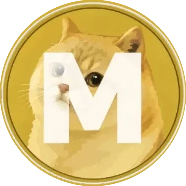
SOL Ð DOGE 🔥 burnA meme token with a job: bridging cat energy on Solana to permanent creativity on Dogecoin.
Meowecoin (MEOWE) lives on Solana: fast, cheap, and built for community.
Traded against wrapped DOGE on Solana in a Pump.fun AMM pool.
A project treasury holds native Dogecoin, so it can do things on the real DOGE chain.
Burns are planned to pay for permanent memes, messages and art written to Dogecoin.
wDOGE on Solana is an SPL token. It can't sign or broadcast a transaction on the Dogecoin blockchain itself.
P2FK data is written into ordinary Dogecoin transactions, which have to be funded by real, spendable DOGE UTXOs.
Most meme coins are vibes only. Meowecoin wants every burn to leave something behind.
A treasury-backed relay connects the two chains. All of this is a design concept. Nothing is live.
A user burns Meowecoin on Solana and attaches what they want to create.
A backend listener sees the confirmed burn.
It works out the DOGE equivalent of the burned amount.
The treasury spends native DOGE from its own full node.
A P2FK transaction is built that carries the payload.
A permanent object lands on Dogecoin. The project node and community nodes index it. p2fk.io stays an optional public reader.
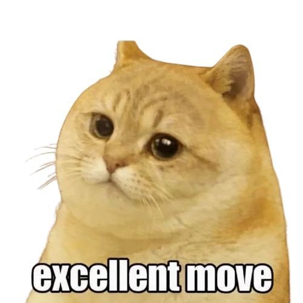
P2FK (Pay-to-Future-Key) is a multichain metaprotocol invented by embii in 2013 as part of the HugPuddle project. It writes data straight into ordinary blockchain transactions, and it runs on Dogecoin as well as Bitcoin, Litecoin and Mazacoin.
A payload is cut into 20-byte chunks. Each chunk is encoded as a regular-looking address and sent a tiny output. Software like Sup!? reads a transaction's outputs, decodes those addresses and puts the bytes back together into messages, files and metadata. The idea comes from the early "Satoshi uploader".
Sup!? (satoshi universal protocol) is embii's experimental app on top of P2FK. It supports profiles, tradeable objects with creators, owners and royalties, public and private messages, and polls. Larger media can be linked through IPFS.
Sup!? references Dogecoin P2FK content with a DOG: prefix (for example DOG:<txid>/dodge-meme.gif) and ships with Dogecoin Core. That makes a DOGE full node a natural home for Meowecoin artifacts.
p2fk.io (bitFossil), by embii, is an open-source REST API for P2FK messages, objects and profiles across BTC, LTC, DOGE and MZC. It stays a useful public reader. Meowecoin will not depend on it alone: the project node and community Dogecoin nodes index the network too.
Every burn becomes a DOGE-chain artifact. When the data sits in confirmed Dogecoin transactions, a meme, a message or a piece of art stays readable by anyone with a copy of the chain. No server has to stay online for it to survive.
This isn't hypothetical. The Meowecoin creator wrote this P2FK injection to the Dogecoin chain in September 2014, and it can still be read back today.
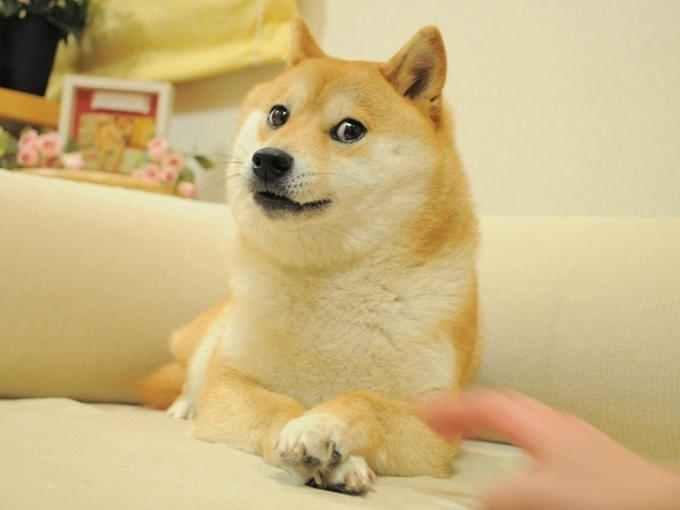
doge.jpg · 15,342 bytes, decoded straight from the transaction“Dogecoin (/ˈdoʊʒkɔɪn/ DOHZH-koyn, code: DOGE, symbol: Ð and D) is a cryptocurrency featuring a Shiba Inu from the "Doge" Internet meme on its logo. It was introduced on December 8, 2013… …use the phrase "To the moon!" to describe the overall sentiment of the coin's rising value.” Excerpt of the on-chain message
The system will not depend solely on p2fk.io. Any user will be able to connect their own Dogecoin full node, and the project will run its own indexed node. p2fk.io remains a useful public reader and API, credited to embii.
Any user will be able to connect their own Dogecoin full node to the network.
Meowecoin will run its own indexed Dogecoin node, so the system does not rely fully on p2fk.io.
The more users connect nodes, the more stable and resilient the Meowecoin universe becomes.
Node operators will receive benefits from the fee structure. Concept only: no specific percentages, and no promise of returns.
More nodes, a stronger universe. Each Dogecoin full node someone connects makes indexing steadier. p2fk.io remains a public reader credited to embii. It is not the only way the network is read.
Concept only, not financial advice. Node software is not available yet, and benefits for operators are not a yield, a rate, or a promise of returns.
The MEOWE mint is live on Solana, paired with wrapped DOGE. The burn, fee, and node-reward ideas below are still a concept.
Users burn MEOWE to request an on-chain creation. Burned supply is gone for good.
The backend converts the burn into a DOGE amount, and the treasury pays the Dogecoin transaction from native DOGE.
Any Meowecoin the treasury receives gets sent to a dead wallet, which keeps reducing supply.
An optional ~0.5% fee might help fund the treasury and infrastructure, with a share going to node operators. Concept only, still to be decided, and not a promise of returns.
Not an offer and not financial advice. This page does not connect a wallet or send a transaction. Buying happens on Pump.fun. A share of fees for node operators is a concept only: no extra percentages, and no promised returns.
Previews of what the creative platform could do. These are mockups. The buttons do nothing yet.
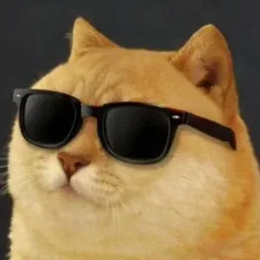
Turn a meme into a Sup!?-style object on Dogecoin.
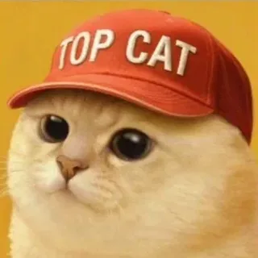
Etch a short public message that stays in the chain.
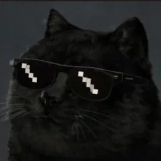
Store a small image directly in Dogecoin transaction data.
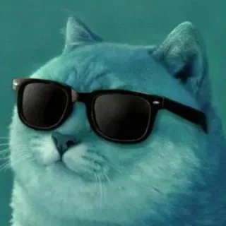
Mix cat and doge culture into a one-of-one artifact.
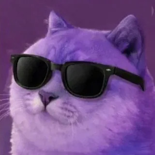
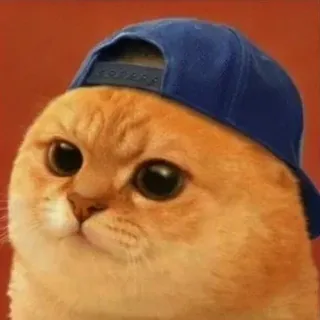
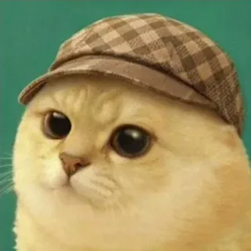
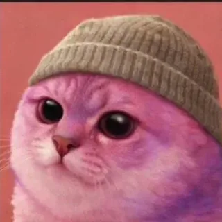
Doge-themed P2FK artifacts already on the Dogecoin chain are planned to be airdropped to Meowecoin holders once the system is built. These are real artifacts you can inspect today. The airdrop itself is a future plan, with no set date, eligibility rules or promised value.
Sup!? object · CC0 · content etched on Dogecoin on 16 Sep 2014
DOG:ca8b09…6665/doge.jpg
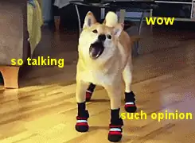
Sup!? object · CC0 · 1.1 MB GIF etched on Dogecoin on 27 Oct 2014
DOG:73e146…c58f/dodge-meme.gif
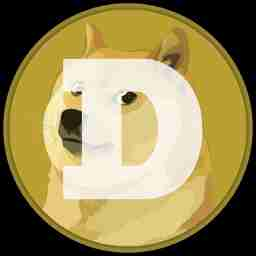
Sup!? object · content etched on Dogecoin on 28 Dec 2024
DOG:d8a4f0…8353/doge.jpg
P2FK message on Dogecoin · 15 Sep 2014
DOG:7ce86d…47d5
Planned feature, subject to change. Artifacts shown come from a live p2fk.io search for “Doge”. The objects are Sup!? registrations whose content lives on the Dogecoin chain. Distribution mechanics, eligibility and timing are still to be decided. Nothing here is a promise of value.
Explain the idea and gather the community. You are here.
Fund a native-DOGE treasury on our own indexed full node, watch Solana burns, and open node-operator onboarding.
Build P2FK transactions with embii's Sup!? tooling, broadcast them to Dogecoin, and let community nodes index alongside the project node.
Mint, write, upload and remix DOGE-chain artifacts from one interface, plus planned airdrops of existing Doge-themed P2FK artifacts to Meowecoin holders. Node operators are planned to receive benefits from the fee structure. Concept only: no promised returns.
Meowecoin documents
Memes are forever on Doge.
Version 1.0 · October 2026 · Community edition
Status note. MEOWE is live on Solana. The MEOWE Portal ("the forge"), the burn engine, the Dogecoin indexer, the marketplace and holder rewards in wDOGE are planned and in development. Nothing in this paper is a promise of features, timelines, returns or price. Illustrative numbers use today's estimated prices and are labeled as illustrations.
Meowecoin (MEOWE) is a community-run meme token on Solana that started life as a reaction emoji in the DOGEos Discord server. After its original deployer abandoned it, the community took it over and is rebuilding it with a new website, a verified X account, a Telegram group and a product: the MEOWE Portal, nicknamed "the forge".
The portal is planned as a place where memes and social content are made to last. Users get a portal-generated Solana wallet, mint a profile, post messages and memes, mint items and later trade them on a marketplace, paying only in MEOWE. Files live on IPFS. Small pointers to them are written to Solana. Profiles, items and ownership are written permanently to Dogecoin mainnet using Sup's P2FK (pay-to-fake-key) format, the same way Sup records data on Bitcoin.
Every action is priced in pennies and paid in MEOWE: a post costs about a penny (~$0.01) and creating a profile costs about $0.15. Of each fee, 30% is burned forever, 60% is swapped to DOGE to pay for Dogecoin records and fund the treasury, and 10% goes to community nodes that pin files and run indexers. Separately, the PumpSwap creator fee is planned to go 100% to holders, paid in wDOGE.
The design is simple to state: use creates demand for MEOWE, use burns MEOWE, and the records it creates sit on the oldest meme chain there is. Memes are forever on Doge.
MEOWE did not start as a token. It started as a reaction emoji in the DOGEos Discord server, a cat face the community used to react to Doge memes. It spread the way good emojis do, and eventually it became a token.
The lore leans on two ideas:
MEOWE was launched on pump.fun. The original deployer launched it with no website, no Telegram and no socials, pumped it, dumped it, and abandoned it.
The holders who stayed decided to rebuild instead of walking away. This is a community takeover (CTO). So far the community has:
There are no team wallets and no vesting. Nobody holds a reserved allocation waiting to unlock. The community owns the project because the community is all that is left, and that is the point.
Memes are the culture of crypto, but where they live is fragile.
MEOWE's answer is to give the token a job: paying for a place where memes, profiles and items are recorded on a chain that keeps everything.
The MEOWE Portal is a web app, separate from the meoweco.in website, that is in development. Everything in this section is planned.
| Feature | What it means | Where it is recorded |
|---|---|---|
| Wallet | A portal-generated Solana wallet, similar to SupSpace (supspace.io, built by embiimob) | Solana |
| Profiles | Mint a profile with a name, image and bio | Dogecoin mainnet (P2FK) + IPFS |
| Posts | Post messages and memes | Solana memo pointer + IPFS |
| Items | Mint memes and art as items you own | Dogecoin mainnet (P2FK) + IPFS |
| Marketplace | Browse items, later buy and sell | Preview first, then trading |
One currency. Every action is paid only in MEOWE. Users never need to hold DOGE or manage a Dogecoin wallet. The backend handles the burns, swaps and Dogecoin conversions behind the scenes.
Why "the forge". Content goes in as a file and comes out as a permanent record: forged onto Dogecoin, pinned on IPFS and paid for with MEOWE that is partly burned in the process.
The portal uses three layers, each doing what it is best at: Solana for payments and pointers, IPFS for files and Dogecoin for permanent records.

Solana: the payment and pointer layer. Every portal action is one Solana transaction. It pays the fee in MEOWE, burns the burn share, swaps the swap share into wDOGE for the treasury, and attaches a memo. The memo is a small JSON pointer holding the IPFS CID (content ID) of the post or profile update.
IPFS: the file layer. Images, memes and JSON payloads live on IPFS. They are pinned by the project's own Kubo node plus public pinning services, and later by community nodes. A CID is a fingerprint of the content: if the file changes, the CID changes, so a CID recorded on chain proves exactly which file was meant.
Dogecoin mainnet: the permanent record layer. Profiles, items and ownership are written to Dogecoin using Sup's P2FK (pay-to-fake-key) structure, the same way Sup does on Bitcoin. P2FK encodes data into tiny unspendable outputs, so every Dogecoin full node keeps it forever.
Our own Dogecoin indexer. p2fk.io indexes Sup records on Bitcoin only, so the project runs its own Dogecoin indexer. It reads every Dogecoin block, rebuilds P2FK records with Sup's rules, and tells the portal who owns what.
Linking Solana to Dogecoin. Each Dogecoin P2FK injection carries a signature unique to the Solana wallet that paid or burned for it, so ownership links back to that wallet. The per-user Dogecoin key that signs these records is derived by the portal and is not exportable, by design.

Phasing. Phase 1 uses Solana memos plus IPFS CIDs for posts, with Dogecoin (via Sup's format) for objects. A daily Dogecoin anchor, one batch hash covering the day's Solana activity, is planned for later. The marketplace starts preview-only.
| Item | Detail |
|---|---|
| Name / ticker | Meowecoin / MEOWE |
| Chain | Solana (SPL token), launched on pump.fun |
| Contract address | FiYTnrwt6CPmWQyWY4evBLK5Lu21jJSRHPYtX4Aepump |
| Main pool | PumpSwap, MEOWE paired with wrapped DOGE (wDOGE) |
| Pool address | 5iQ5n8Sir2xKpGDJYcem5VxW6HVqUF6rkVyYeMepLs6u |
| Launch supply | 1,000,000,000 MEOWE |
| Current supply | ~960.7M MEOWE (~39.3M already burned) |
| Team wallets | None |
| Vesting | None |

There is no reserved team or marketing allocation and nothing scheduled to unlock. Supply only goes one way: down, through burns.
Each portal action has a simple price in USD terms, converted to MEOWE at the moment of the action and paid in MEOWE. A post costs about a penny (~$0.01, about 1,246 MEOWE at today's estimated price), and creating a profile costs pennies (~$0.15, about 19,025 MEOWE). Every fee is split three ways:

The treasury also sponsors users' Solana network fees, with an optional user-paid speedup for people who want faster processing.
Illustration at today's estimated prices. Not a projection.
| Action | Fee | MEOWE burned |
|---|---|---|
| One post | ~1,246 MEOWE (~$0.01) | ~374 MEOWE |
| One profile mint | ~19,025 MEOWE (~$0.15) | ~5,700 MEOWE |
| 1,000 posts a day | ~1.25M MEOWE a day | ~374K a day, ~136M a year |
At 1,000 posts a day, about 136M MEOWE a year would be burned, roughly 14% of the current ~960.7M supply. Each user only burns pennies' worth, but it adds up across the community.
This is the key mechanic. A post costs about a penny whether MEOWE is cheap or expensive. So the number of tokens burned per action depends on price:
tokens burned per action = 30% × (fee in dollars ÷ MEOWE price)
If MEOWE's price rises, the same penny fee burns fewer tokens: at ten times today's price, a post would burn about 37 MEOWE instead of 374. The dollar value burned stays the same.

Now put that together with steady usage and steady demand (a roughly constant market cap). As supply shrinks, each token is worth a little more, so each action burns a little less. The result is that the burn removes a roughly constant share of the remaining supply each year, about 14% a year in the illustration, rather than a fixed number of tokens:
supply after t years = today's supply × (1 − 0.14)^t
Supply keeps falling but never reaches zero. Mathematically this is geometric decay.

| Year (illustration) | 0 | 1 | 2 | 5 | 10 |
|---|---|---|---|---|---|
| Supply (M MEOWE) | 960.7 | ~826 | ~711 | ~452 | ~213 |
These figures only show the shape of the curve under fixed assumptions. Real usage, prices and demand will differ, and could be far lower.
Market cap equals price times supply. Burning tokens does not by itself raise market cap: if supply falls and nothing else changes, each token is worth a bit more and the total stays the same. The value case for MEOWE is not "burns make number go up". It is:
Neither point is a promise of returns. If nobody uses the portal, neither effect happens.
MEOWE trades in a PumpSwap pool paired with wrapped DOGE. PumpSwap pays a creator fee on trading in that pool. The community plans to send 100% of that creator fee to MEOWE holders, paid in wDOGE.
Rewards depend on trading activity in the pool and can be small or zero. They are not interest, yield or a guaranteed income.
The treasury keeps the portal running: it funds writing records to Dogecoin and sponsors users' Solana fees. It is designed to fund itself from usage instead of from a large war chest.

If prices or network fees change, the fee in MEOWE adjusts, because the price of each action is set in USD or DOGE terms.
Anyone can check. Profiles, items and ownership live on Dogecoin mainnet. Anyone can verify marketplace objects by syncing a Dogecoin node and running the indexer. You do not need to trust the project's servers.

Ownership traces back to the payer. Every Dogecoin P2FK injection carries a signature unique to the Solana wallet that paid or burned for it, so an item on Dogecoin can be traced to the wallet that created it.
Non-exportable Dogecoin key. The per-user Dogecoin key is derived by the portal, only signs records, never holds coins, and cannot be exported. This keeps a user's Dogecoin identity bound to their Solana wallet.
Files are pinned in more than one place. IPFS content is pinned by the project's own Kubo node plus public pinning services, with community nodes planned to add more copies.
Atomic payments. Burn, swap and memo happen in one Solana transaction. If the swap price moves too far, the transaction fails and nothing is charged.
Known risks the design must manage. A browser wallet is only as safe as the user's password and the code the site serves. The relayer's Dogecoin key holds real funds, so only an operating float should be kept online. Redeeming wDOGE depends on bridge smart contracts and signers. No third-party audit has been announced; treat all code as unaudited until one is published.

| Phase | Scope | Status |
|---|---|---|
| Phase 0 | Community takeover, new site, verified X, Telegram, listings | Done / ongoing |
| Phase 1 | Portal MVP: wallet, profiles, posts, burn engine | Planned |
| Phase 2 | Dogecoin P2FK item minting + the Dogecoin indexer | Planned |
| Phase 3 | Marketplace (preview first, then trading) + holder wDOGE rewards | Planned |
| Phase 4 | Daily Dogecoin anchor + community-run nodes | Planned |
MEOWE is a community takeover: no company, no team allocation, just holders who decided to build. Join in here:
| Channel | Link |
|---|---|
| Website | meoweco.in |
| X (verified) | @1742Meowe (x.com/1742Meowe) |
| Telegram | t.me/meowecoinOG |
| Contract address | FiYTnrwt6CPmWQyWY4evBLK5Lu21jJSRHPYtX4Aepump |
| PumpSwap pool (MEOWE/wDOGE) | 5iQ5n8Sir2xKpGDJYcem5VxW6HVqUF6rkVyYeMepLs6u |
Always check the contract address before buying; the only official links are the ones above. Ways to help: make memes, share them, run a node when community nodes open up, and give feedback on the portal.
Not financial advice. This white paper is for information and community discussion only. It is not financial, investment, legal or tax advice, and it is not an offer or solicitation to buy or sell any token or security. Do your own research (DYOR) and talk to a qualified professional before making any decision.
No promises. Nothing here promises returns, profits, price levels, price targets, listings, partnerships or delivery dates. Illustrative figures are based on today's estimated prices and simple assumptions. They are not projections and actual results may be very different.
Risks. Buying, holding or using MEOWE involves serious risk, including:
Only use money you can afford to lose. By interacting with MEOWE you accept these risks.
Memes are forever on Doge.
Architecture, data flow and fee mechanics of the MEOWE Portal ("the forge"). Version 1.0, October 2026.
Audience: developers and technical investors. Status: the MEOWE Portal is in development. Everything in this document about the portal, the burn engine, the indexer, the marketplace and holder rewards describes the planned design, not a live system. Numbers marked illustration use today's estimated prices and are not projections.
| Item | Value |
|---|---|
| Token | MEOWE (SPL token on Solana), launched on pump.fun |
| Contract address (mint) | FiYTnrwt6CPmWQyWY4evBLK5Lu21jJSRHPYtX4Aepump |
| Main pool | PumpSwap MEOWE / wDOGE: 5iQ5n8Sir2xKpGDJYcem5VxW6HVqUF6rkVyYeMepLs6u |
| Supply | 1,000,000,000 at launch; ~960.7M now (~39.3M burned). No team wallets, no vesting |
| Links | meoweco.in · X @1742Meowe · t.me/meowecoinOG |
The portal is a separate web app from meoweco.in. It lets holders create profiles, post messages and memes, mint items and later trade them, paying only in MEOWE. Four layers do the work:
| Layer | Role |
|---|---|
| Solana | Payment layer. Every action is one Solana transaction that pays the MEOWE fee, burns the burn share, swaps the swap share to wDOGE for the treasury, and carries an SPL memo with a small JSON pointer (IPFS CID). |
| IPFS | Content layer. Files and JSON payloads, pinned by the project's own Kubo node plus public pinning services. |
| Dogecoin mainnet | Permanent record layer for profiles, items and ownership, written in Sup's P2FK (pay-to-fake-key) format, the same way Sup writes records to Bitcoin. |
| Backend | Relayer (watches Solana, funds and broadcasts Dogecoin injections, sponsors Solana fees), treasury, and the project's own Dogecoin P2FK indexer. |
{"v":1,"t":"post","id":"<action-id>","cid":"bafy..."}.Pricing. Each action has a simple price in USD terms and is paid in MEOWE at the current price. A post costs about a penny (~$0.01, about 1,246 MEOWE at today's estimated price); creating a profile costs pennies (~$0.15, about 19,025 MEOWE).
fee_USD = price of the action in USD (post ≈ $0.01, profile ≈ $0.15)
fee_MEOWE = fee_USD / P_MEOWE (P_MEOWE = MEOWE price in USD at quote time)
burn = 0.30 × fee_MEOWE → burned forever (sent to the burn, removed from supply)
swap = 0.60 × fee_MEOWE → swapped to wDOGE in the same tx → treasury
nodes = 0.10 × fee_MEOWE → community IPFS and indexer operators
Treasury. Treasury income is the 60% swap share of action fees plus a starting DOGE deposit of a few hundred dollars. (The PumpSwap creator fee is planned to go 100% to holders, so it is not treasury income.) The treasury funds the Dogecoin record writes and sponsors users' Solana fees by acting as fee payer, with an optional user-paid speedup. wDOGE is redeemed to native DOGE on demand, via bridge or exchange. Fees are set to fully cover writing records to Dogecoin and running the network, so the treasury funds itself from usage after the initial deposit.
Illustration at today's estimated prices (not a projection):
| Action | Fee | Burned (30%) |
|---|---|---|
| Post | ~1,246 MEOWE (~$0.01) | ~374 MEOWE |
| Profile mint | ~19,025 MEOWE (~$0.15) | ~5,700 MEOWE |
| 1,000 posts/day | ~1.25M MEOWE/day | ~374K/day ≈ 136M/yr ≈ 14% of ~960.7M |
Fees are fixed in dollars, not in tokens. If daily usage is N actions with burn value b (USD) each:
tokens burned per year B = 365 × N × b / P
if demand is steady, market cap M = P × S is roughly constant, so P = M / S
then B / S = 365 × N × b / M = k (a constant share of the remaining supply)
supply after t years S_t = S_0 × (1 − k)^t (illustration: k ≈ 0.14)
As supply shrinks and each token is worth more, each action burns fewer tokens. Under steady usage and demand the burn removes a roughly constant share of what remains: supply keeps falling but never reaches zero (geometric decay). At 14% a year the illustrative path is ~960.7M → ~452M after 5 years → ~213M after 10 years.
Economic honesty. Market cap = price × supply, so burning tokens does not by itself raise market cap. The value case is (1) using the portal requires buying MEOWE, which is buy pressure, and (2) burns make each remaining token a larger share of the network. No returns or price targets are implied.
| Phase | Scope | Status |
|---|---|---|
| 0 | Community takeover, new site, verified X, Telegram, listings | Done / ongoing |
| 1 | Portal MVP: wallet, profiles, posts, burn engine | Planned |
| 2 | Dogecoin P2FK item minting + Dogecoin indexer | Planned |
| 3 | Marketplace (preview first, then trading) + holder wDOGE rewards | Planned |
| 4 | Daily Dogecoin anchor + community-run nodes | Planned |
Not financial advice. MEOWE is a highly volatile meme token; the portal is not live; wDOGE carries smart-contract and bridge risk; regulation is uncertain. Do your own research.